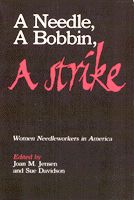

<body bgcolor="#FFFFFF" text="#000000" link="#0000FF" vlink="#CC0000" alink="#CC0000"><center><hr width="350" size="1" align="center" noshade>Tracing the shift in needleworkers' environments&#151the home, sweatshop, department store, and factory<hr width="350" size="1" align="center" noshade><p><a href="https://cdcshoppingcart.uchicago.edu/Cart/ChicagoBook.aspx?ISBN=9780877223405&&PRESS=temple" target="_top">Buy this book!</a> | <a href="https://cdcshoppingcart.uchicago.edu/Cart/Cart.aspx?PRESS=temple" target="_top">View Cart</a> | <a href="https://cdcshoppingcart.uchicago.edu/Cart/Cart.aspx?PRESS=temple" target="_top">Check Out</a></p><p></p></center><!--none//--><h1>A Needle, a Bobbin, a Strike</h1>
<H2>Women Needleworkers in America</H2>
<h3>edited by Joan M. Jensen and Sue Davidson</h3>
<P>cloth 0-87722-340-8 $34.95, <FONT COLOR=#990033>Out of Print</FONT>
<br>paper 0-87722-407-2 $18.95, Sep 83, <FONT COLOR=#990033>Out of Print</FONT>
<BR> 256 pp
</P><BLOCKQUOTE><I>"...an absorbing account of the interactions of cultural, technological, and economic change. There are sections on needlework 'as art, craft, and livelihood' in the early years; on critical events in the unionization of the industry; and on the new workers found in the industry today. As cultural and feminist historians, the contributors have added new dimensions to selected familiar events.... [It] will appeal to any reader interested in labor, feminist, or cultural history."</I>
<br>&#151<b><I>Library Journal</I></b><I></I></BLOCKQUOTE>
<p>Almost exclusively considered "women's work," the sewing trades have a history of toil, exploitation, and unfinished protest. These essays trace the shift in needleworkers' environments&#151the home, sweatshop, department store, and factory&#151from the nineteenth into the twentieth century, and their adaptation to changes wrought by the sewing machine. The effects of unionization and the first landmark strikes in Cleveland, Rochester, Chicago, and New York City are compared to contemporary issues for clothing workers. The exploitation of foreign labor as well as minority workers in this country along with the re-emergence of sweatshops is the final focus of this collection on the plight of the needleworkers.
<BR>&nbsp;<h2>Reviews</h2>
<p><I>"The chronological structure, each section's lucid and comprehensive introduction, and a generally exemplary narrative style in the individual essays combine to create an enormously informative yet accessible book...."</I>
<br>&#151<b><I>Choice</I></b>
<BR>&nbsp;<H2>About the Author(s)</H2>
<P><b>Joan M. Jensen</b> is Professor of History at New Mexico State University.</P>
<P><b>Sue Davidson</b> co-edited <I>The Maimie Papers</I>.</P>
<BR><H2>Subject Categories</H2>
<p><A HREF="/tempress/american.html" TARGET="_top">American Studies</a>
<BR><A HREF="/tempress/women.html" TARGET="_top">Women's Studies</a>
<BR><A HREF="/tempress/labor.html" TARGET="_top">Labor Studies and Work</a>
</p>
<BR><h2 class="inpageheading">In the series</H2>
<P><I><a href="http://www.temple.edu/tempress/women_political.html" onMouseOver="window.status='Click for other books in this series!'; return true;" onMouseOut="window.status=''; return true;" target="_top">Women in the Political Economy</a></i>, edited by Ronnie J. Steinberg.
</p><p>No longer active.<p><i>Women in the Political Economy</i>, edited by Ronnie J. Steinberg, includes books on women and issues of work, family, social movements, politics, feminism, and empowerment. It emphasizes women's roles in society and the social construction of gender and also explores current policy issues like comparable worth, international development, job training, and parental leave.</p>
<p align="center"><a href="https://cdcshoppingcart.uchicago.edu/Cart/ChicagoBook.aspx?ISBN=9780877223405&&PRESS=temple" target="_top">Buy this book!</a> | <a href="https://cdcshoppingcart.uchicago.edu/Cart/Cart.aspx?PRESS=temple" target="_top">View Cart</a> | <a href="https://cdcshoppingcart.uchicago.edu/Cart/Cart.aspx?PRESS=temple" target="_top">Check Out</a></p><p><font face="Arial" size="1"><a href="copyright.html" onMouseOver="window.status='Web Copyright Policy';return true;" onMouseOut="window.status=''" title="Web Copyright Policy">&copy;</a> 2015 <a href="http://www.temple.edu" target="new" onMouseOver="window.status='Link to Temple University home page';return true;" onMouseOut="window.status=''" title="Link to Temple University home page">Temple University</a>. All Rights Reserved. http://www.temple.edu/tempress/titles/330_reg.html</font></p>